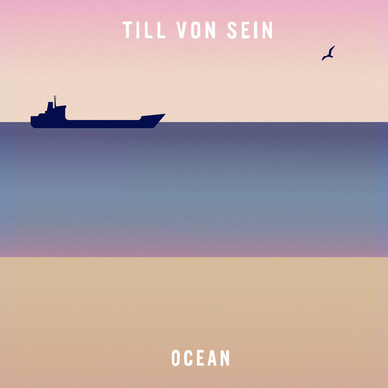

Till Von Sein - Ocean



Información del álbum facilitada por discogs.com:
Fecha de lanzamiento: 2019
Géneros: Electronic
Estilos: House
Pais: Germany
Votos: Media de 5.0 con 5 votos
Sello: Tilly Jam
Phonographic Copyright (p): Tilly Jam
Copyright (c): Tilly Jam
Artwork - Pille Pop
Mastered By - Salz Mastering
Producer - Alex Krüger
Producer - Till Von Sein
Tracklist:
A1. Aloha
A2. Neptune
A3. Cruise Control
A4. Mission Muizenberg
B1. Junjung
B2. La Boum
B3. Level 61
B4. Ocean